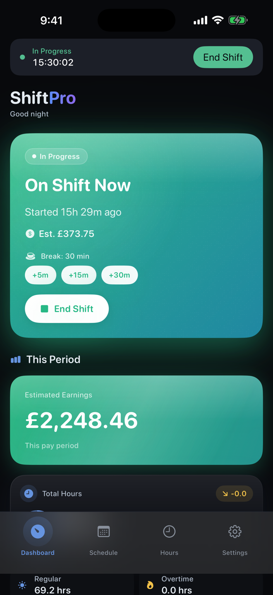
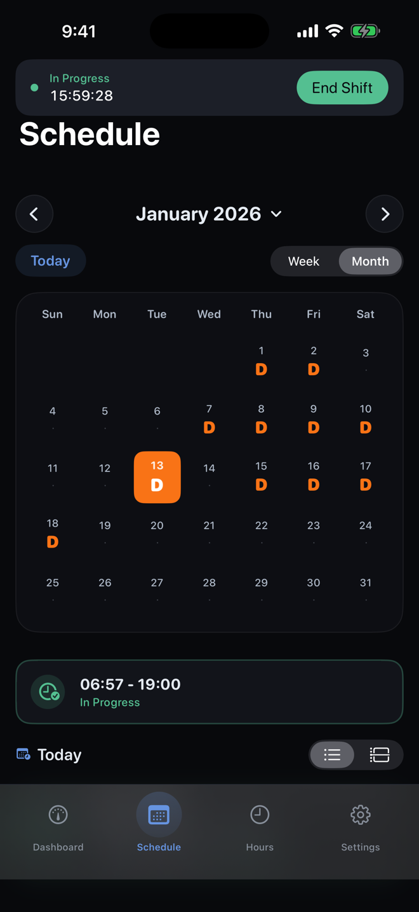
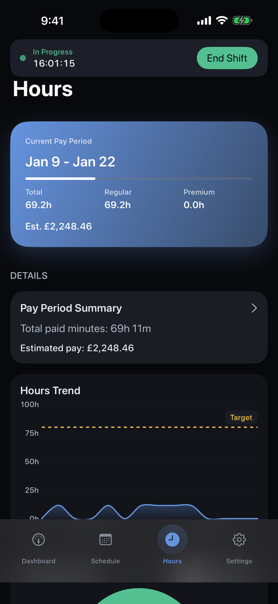

01
Build the rota once.
Create weekly or rotating patterns, apply them across your calendar, and still add one-off or overnight shifts whenever work changes.
Built for real shift patterns
Plan rotating, irregular or fixed work. Track what you actually worked. Understand your pay period without giving your schedule to another service. Free to try, with one lifetime Pro upgrade and no subscription.

Rotating patterns
Overnight shifts
Hours and breaks
Estimated pay
Professional reports
One clear workflow
ShiftPro connects the schedule you planned with the hours you actually worked and the pay you expect.
01
Create weekly or rotating patterns, apply them across your calendar, and still add one-off or overnight shifts whenever work changes.
02
Start and end shifts from the dashboard, record breaks, and correct actual times when the day runs differently.
03
Review regular and premium hours, rate multipliers and estimated earnings based on the rates you enter.
From rota to report


Privacy is part of the product
No account. No advertising. No third-party analytics or tracking SDKs. Your profile, shifts, patterns and pay settings stay locally in the app container.
Read the plain-language Privacy PolicyYour working data is stored on your device.
Calendar and notifications remain optional.
You remain in control of the information you enter.
Flexible enough for your rota
Days, nights, long shifts and changing rotations.
Repeating patterns, overnight work and premium hours.
Irregular starts, variable breaks and changing weeks.
Continental, four-on/four-off and fixed rotations.
Shift planning guides
Clear guides for building rotas, planning nights and understanding the hours you actually worked.
Rota planning
Use a repeatable process for coverage, preferences and handovers.
Read the guideNight shifts
Make overnight work visible across dates, breaks and pay periods.
Read the guideHours and pay
Separate the rota you expected from the workday you completed.
Read the guideAvailable now
Plan the rota, track what changed and keep a clearer record of your working time.